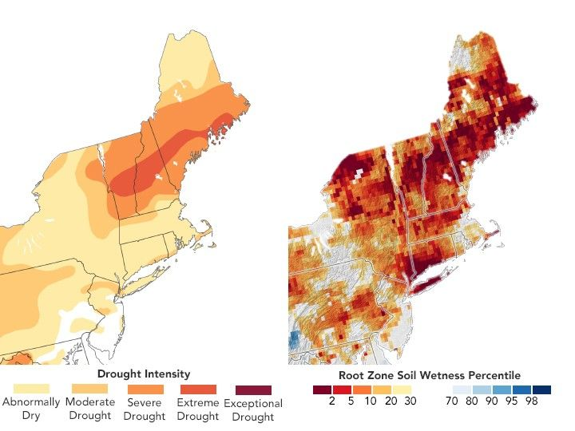

Drought Worsens Across Northern New England
In mid- to late September 2025, drought conditions across the United States were mixed, with some areas seeing improvement while others worsened. The Northeast was one region where conditions deteriorated amid persistently dry weather.
The map on the left shows drought conditions in the Northeast as of September 23, 2025. Produced by the U.S. Drought Monitor—a partnership of the U.S. Department of Agriculture (USDA), the National Oceanic and Atmospheric Administration (NOAA), and the University of Nebraska–Lincoln—the map shows extreme drought (dark orange) spreading across northern New England in the week leading up to this date.
Prolonged dryness has affected crops and pastureland, reduced streamflow, lowered lake levels, and caused groundwater shortages, according to a September 25 update from the Northeast Regional Climate Center. Approximately 24 percent of Vermont and 33 percent of New Hampshire were experiencing extreme drought, marking the largest area at this level in either state since U.S. Drought Monitor records began in 2000.
One indicator of the drought appears in the root zone—the upper soil layer critical for agriculture. When this layer lacks water, seeds may fail to germinate and plant growth can be stunted. In late September, large portions of agricultural areas in New York, Vermont, New Hampshire, Maine, and West Virginia had inadequate soil moisture for healthy growth.
The map on the right shows root zone soil moisture as of September 23, based on GRACE-FO (Gravity Recovery and Climate Experiment Follow On) satellite data combined with other observations. Colors indicate soil moisture percentiles compared to long-term records (1948–2012). Blue areas reflect wetter-than-usual conditions, while orange and red areas are drier than normal. The darkest red areas represent extreme dryness, occurring roughly once every 50 years.
According to the Northeast Regional Climate Center, water shortages have led to feed crop losses in Vermont, undersized pumpkins in Maine and New York, and stressed tree farms in New Hampshire. News reports also noted tourism impacts, with early fall foliage attracting leaf peepers sooner than usual.
At the time of the U.S. Drought Monitor report, some relief was expected. A cold front was forecast to bring widespread rainfall, and forecasters monitored tropical activity in the Atlantic. However, the early October outlook still called for below-normal rainfall and above-normal temperatures across much of the Northeast.